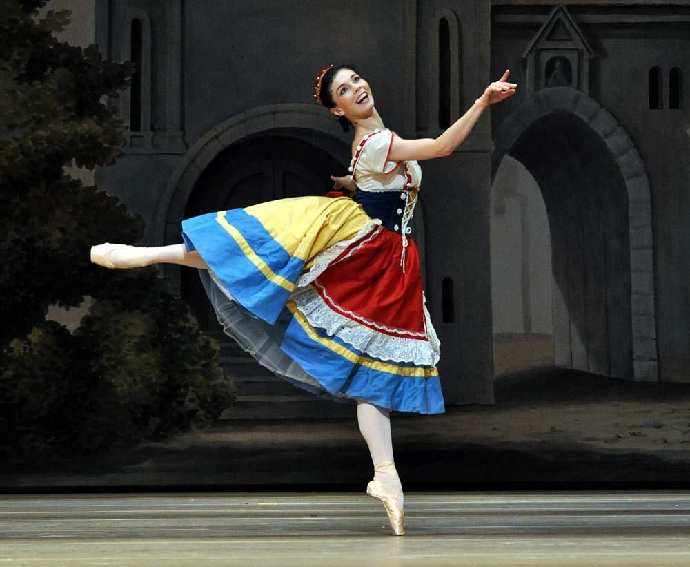
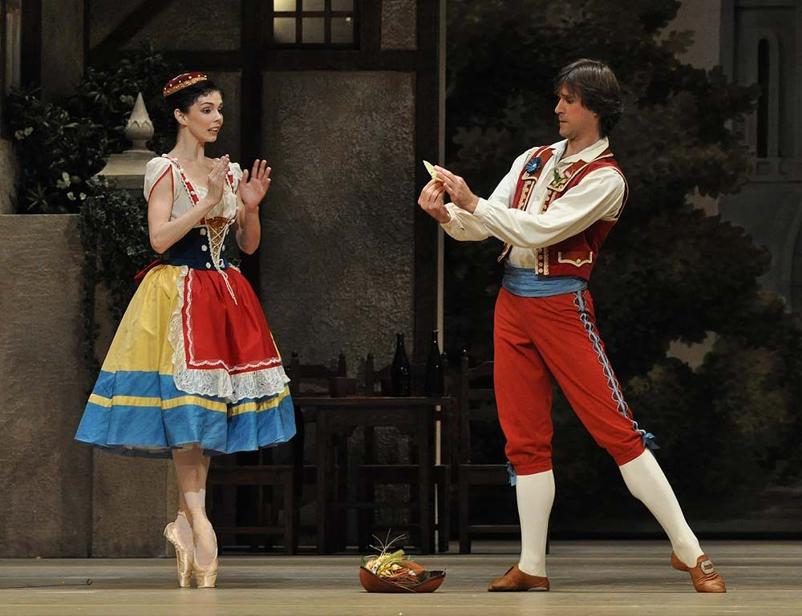
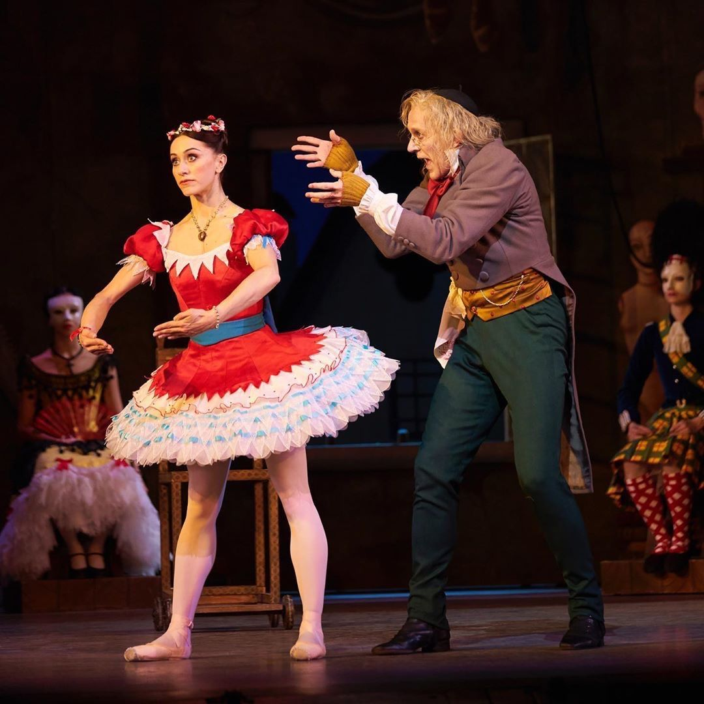
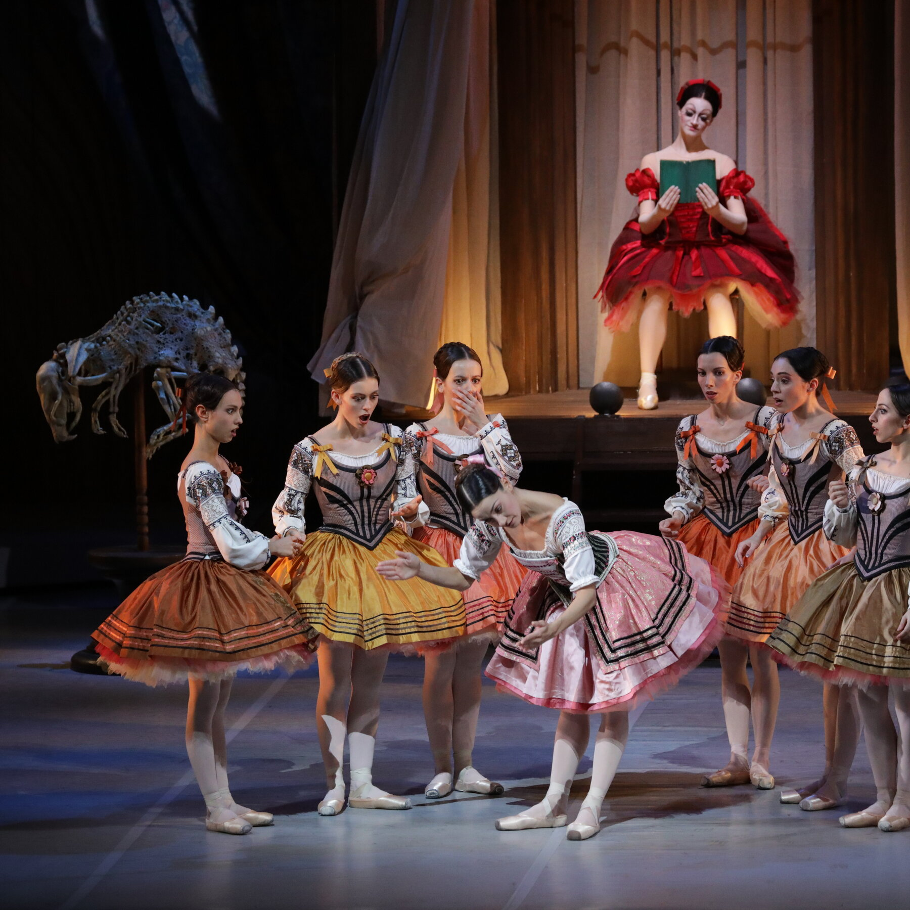

Sinopse
Coppélia é um balé leve, divertido e cheio de momentos cômicos. A história se passa em uma pequena vila onde vive Swanilda, uma jovem esperta e determinada, e seu namorado Franz.
Um dia, Franz se encanta por uma misteriosa garota que sempre aparece na varanda da casa do excêntrico inventor Dr. Coppélius. O que ninguém sabe é que essa “jovem” é, na verdade, Coppélia, uma boneca criada pelo inventor — tão perfeita que parece real.
Com ciúmes, Swanilda decide invadir a casa de Coppélius com suas amigas para desvendar o mistério. Lá dentro, ela descobre que Coppélia não é humana e resolve se passar pela boneca para confundir o velho inventor. A confusão aumenta quando Franz também entra na casa achando que encontrará a jovem misteriosa.
No final, tudo se esclarece e os mal-entendidos são resolvidos com humor. O balé termina com uma grande celebração na vila, simbolizando alegria, união e reconciliação.
Origem da obra, estilos e características
Coppélia estreou em 1870, no Opéra de Paris, e rapidamente se tornou referência no repertório clássico.
Coreógrafo: Arthur Saint-Léon
Compositor: Léo Delibes
Libreto: Charles-Louis-Étienne Nuitter e Arthur Saint-Léon
Estilo: Balé cômico (ballet comique)
A obra marcou um avanço no balé por trazer personagens mais expressivos, cenas teatrais e música extremamente rica e melódica.Diferente dos balés trágicos e dramáticos, ele aposta no humor e na expressão corporal. Suas principais características são:
- Uso intenso da mímica para contar a história.
- Movimentos alegres, saltitantes e expressivos.
- Dalinças folclóricas típicas da época.
- Personagens caricatos, cheios de personalidade.
- Cenários coloridos e atmosfera festiva.
Por isso, Coppélia é muito montado por escolas de balé, sendo um repertório querido para apresentações e exames.
Principais personagens

Swanilda
A protagonista. Inteligente, ciumenta e cheia de atitude, ela é responsável pelos momentos mais cômicos da história. Representa a esperteza e a decisão feminina.
Franz
Namorado de Swanilda. Charmoso, mas um pouco ingênuo. Sua curiosidade pela “moça da janela” causa todo o conflito inicial.


Dr.Coppélius
Inventor excêntrico e solitário que construiu a boneca Coppélia. Sua casa é cheia de autômatos e máquinas misteriosas.
Coppélia
A boneca de olhos de esmalte que todos acreditam ser uma jovem real. Seu realismo extremo é o ponto central da história.

Estrutura em atos
I – A Vila
História começa na praça da vila. Franz se encanta por Coppélia e Swanilda percebe. Moradores dançam, há clima de festa e todos comentam sobre a misteriosa “moça” que nunca desce da casa de Coppélius.
II – A Oficina de Coppélius
Swanilda e suas amigas invadem a oficina. Lá encontram autômatos, bonecos e mecanismos estranhos. Swanilda se passa pela boneca e confunde o inventor. Franz aparece, gerando ainda mais confusão. É o ato mais teatral e divertido do balé.
III – A Festa na Vila
Depois que a verdade vem à tona, a vila celebra a reconciliação de Swanilda e Franz. O ato é composto por várias danças festivas e variações, encerrando o balé com alegria e leveza.
Curiosidades
- Coppélia é um dos pouquíssimos balés clássicos de comédia.
- É conhecido por desenvolver muito a interpretação do bailarino, além da técnica.
- A música de Léo Delibes é uma das mais valorizadas do repertório romântico.
- Muitas escolas de balé usam Coppélia como espetáculo de fim de ano por seu clima alegre.
- Foi um dos primeiros balés a representar personagens femininos fortes e decididos.